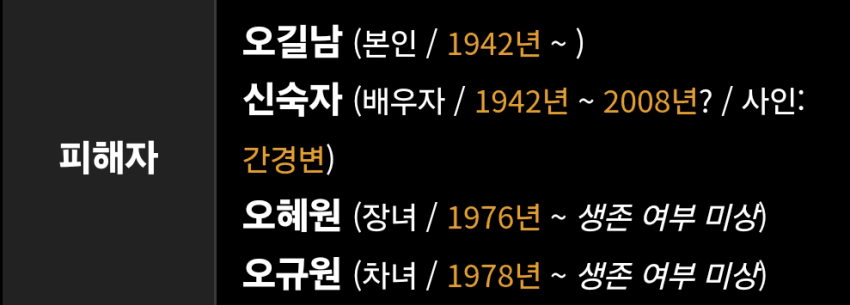
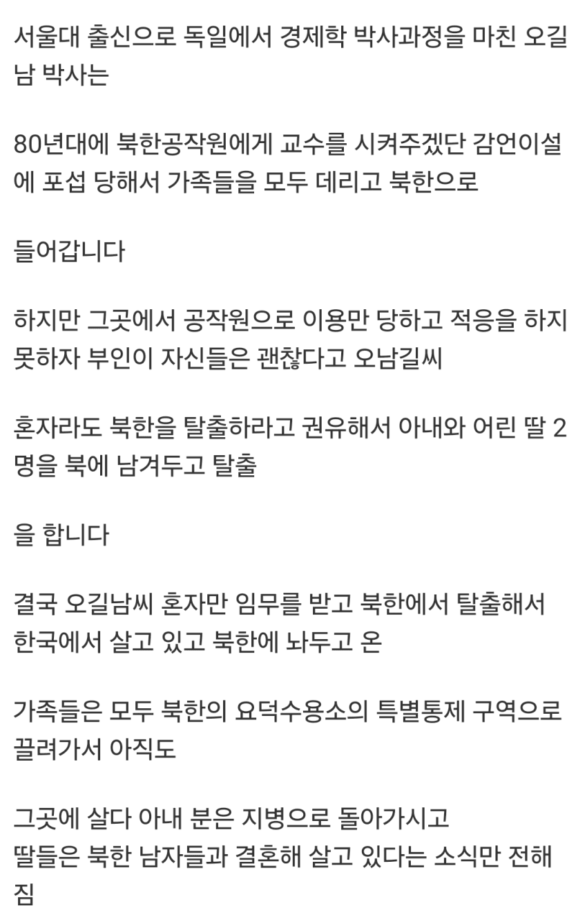
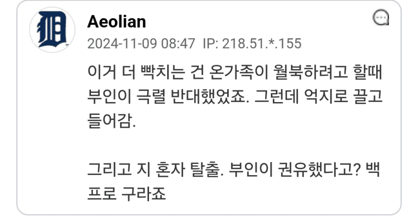
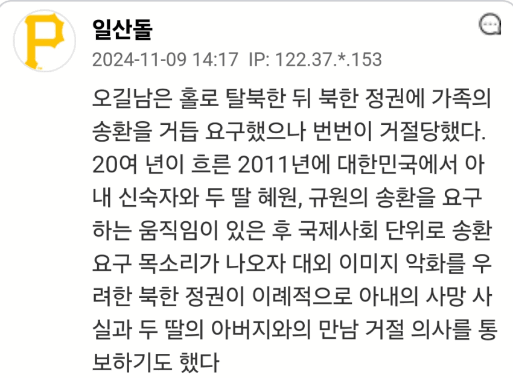
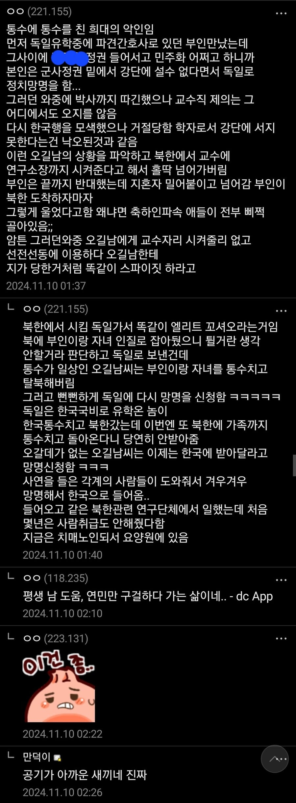

80년대면 북한이 아직 끗발 있을때고 지금처럼 북한 관련 미디어도 발달하지 않아서 그랬을까?
그게 클듯 80년대에 한국 NL 운동권의 조상인 김영환이 강철서신을 통해서 대학가에 주체사상을 뿌렸고 그게 은근히 잘먹혀서 간첩들이 정보망 구축하고 대학생들 포섭함
그리고 김영환은 이후에 월북해서 김일성도 만나고 그랬는데 정작 자신은 거기서 김일성 좆병신인 거 알아차리고 한국 복귀해서 손절함 ㅋㅋㅋㅋㅋㅋㅋ
김일성의 주체사상은 변질 된 주체사상이라나 뭐라나 ㅋㅋㅋ
금치산자면 모를까 아무리 그래도 기본적인 상식이라는게 대가리에 박혀있는 사람이라면 북한이 어떤 곳인지에 대해 몰라도 저렇개 몰랐을까 싶은데
세계에서 북한 관련 정보를 가장 생생하게 접할수 있는 곳은 서독이었음
왜냐면 지금 남함에 탈북자들 존나 맘ㅎ이 살고 있듯 그때 서독에는 동독에서 탈출한 사람들이 졸라 많았거든
근데 저 병신이 살던 곳이 서독임
ㅋㅋㅋ 이걸 다시 받아줘?
그것도 대북 공작 때문이지. 지금도 다를 바 없지만 옛날엔 북괴 정보 얻는 통로가 극히 제한적이었기 때문에 조금이라도 북괴물 먹은 사람은 정보원으로 가치가 있었음
오길북으로 바꿔라ㅋㅋ
근데 극소수의 건 몇건만 가지고 학력과 지성이 별개라는거좀..
최대한 긍정적으로 이해해준다면.. '지식과 지혜는 다르다' 같은 의도 아닐까
지성 명사
1.
지각된것을정리하고통일하여,이것을바탕으로새로운인식을낳게하는정신작용.넓은뜻으로는지각이나직관(直觀),오성(悟性)따위의지적능력을통틀어이른다.
2.
새로운상황에부딪혔을때에,맹목적이거나본능적방법에의하지아니하고지적인사고에근거하여그상황에적응하고과제를해결하는성질.
맹목적이고 본능적인 방법으로 지적인 사고에 근거하지 않고 그 상황에 적응하지 못하고 과제를 해결하지 못했으니 누구보다 비지성인임.
군사정권에 반대한다면서 그보다 더 한 독재정권 밑으로 들어가는게 정상적인 사람의 지능이냐? 그냥 자기 교수시켜준다니까 국비로 유학한건 생각도 않고 이득만 취하려는 전형적인 눈 앞의 이익 쫓는 병신이지
대학나와서 똥글싸는 애들 태반인데 뭘
이건 대표사례인거지
가족들은 온갖 수모당했겠네 ㅅㅂ
박쥐새끼네 몇번을
사람인 이상 어리석은 선택은 할수 있지.
대신 그 선택의 책임을 어떻게 다루는게 중요하다 생각하는데.
저 글과 댓글 정보만 보면,
처음부터 끝까지 요행만 바라고 남의 손만 벌리며 도망치다 끝났네.
부끄러운 삶이네 참
가족을 사지에 참... 모를 사람도 아니고 그저 요행만 바라고
북한 쓰레기들..
자식들이 만남거부한것만 봐도 저사람말이 진짜인지 아닌지 알수 있는거 아닐까.. 거짓말일듯..
상대는 북한이라구
자식들한테 물어도 안보고 "안보고싶다네요" 했을수도 있음 ㅋㅋㅋ
저사람이 ㅂㅅ인거랑 별개로
이뭐 이딴 새끼가.....
내가 단언하는데 대한민국에서 박사들한테 교수시켜줄테니 북한 오라고 꼬드겼을 때 북한 가는 비율이랑
한국 사회에서 소외 되어서 힘겹게 살아가는 3040 남자들한테 기쁨조 출신 중 한명이랑 결혼하게 해주고 평양에 아파트 하나 줄테니 오라고 꼬드겼을 때 북한 가는 비율이랑 따져보면 후자가 압도적으로 많을 듯.
단지 북한이 후자가 쓸모가 없으니 그런 제안을 안 할 뿐인거지.
다 너처럼 빡대가리는 아니야
북한 이민은 북한 꼬라지 잘아니 안속지
대신 멸공정신 내세우고 중국인 한사람 들이밀어서 죽이라고 하면 말 잘들을듯 (개가 중국인인가 검증은 안하고)
80년대에나 그런 말이 통했지, 요즘 누가 북한 말을 믿음;
개인의 입신양명과 요직을 위해 나라까지 등지는 사람이 끝이 좋을리 없지
와 진짜 개병신이다.
앗! 감사 수정한다
댓글 달려서 수정 안된다 ㅜㅜ
지성이라기보다는 인성 문제인 듯
냉전이 제일 피크이던 70년대에 맑스 경제학 전공으로 박사 했으면 애초에 그쪽으로 많이 치우쳐 저 있었을 거 같은데 나머진 다 변명이고 구색이지
교차 검증 할 수 없으니까, 자기 변호적으로 숨긴 부분이 많을듯
그 당시 한국은 마르크스가 쓴 책
한권만 가지고 있어도
남산에 끌려가 코로 설렁탕 먹고
간첩으로 만들어지던 시대였는데
마르크스 경제학 전공해서 한국에서
살겠다고 생각했으면 미친놈임
게다가
부인의 신장과 간이 좋지 않아서
북한 공작원들이 아내를 완치 시켜준다
거짓말을 해서 그것에 속았다 주장하지만
그 당시 서독은 미국의 엄청난 지원과
독일이 가지고 있던 정밀기술 의학공업등으로
세계에서 제일 잘사는 나라였고
바이엘, 베링거인겔하임등을 보유한 의학 선진국에
전국민 의료보험이 적용되어 치료비가 거의 들지 않는 의료 복지 선진국이었음
근데 거길 아픈 마누라를 데리고 간다?
이건 뭐....
본인의 극단적인 빨갱이 이념으로 저지른
일을 남탓하는 거지
요즘도 고액알바 줄테니까 캄보디아로 오라고 속아서 가는 사례들 꾸준히 있는거 보면
해외에서 좋은 조건으로 취업시켜준다면 항상 조심해야 할듯
저 때는 정보도 제대로 없었거니와
북한이 열악하고 가난한 거랑 별개로 나는 가면 교수다 상류층이다 핵심인력이다라는 망상에 빠졌나보네 ㅋㅋ
문과잖아~
사람아냐
저 시대 서울대에 독일유학이면 초엘리트아닌가.
정권에 찍혀서 반발심에 그런건가?
박사학위를 어떤 연구로 얻었는가를 봐야 하는데 마르크스 경제학으로 따냄
85년도에 따냈는데 그 한참 전후로 핵전쟁 어쩌고 했는데 서방에서 살 생각이라는게 없었던 인간이지 않겠나 싶음
ㅋㅋ에휴... 이새ㄲ야 그렇다 하지만 부인과 자식은....
지 아내와 딸 죽인거나 다를바 없네